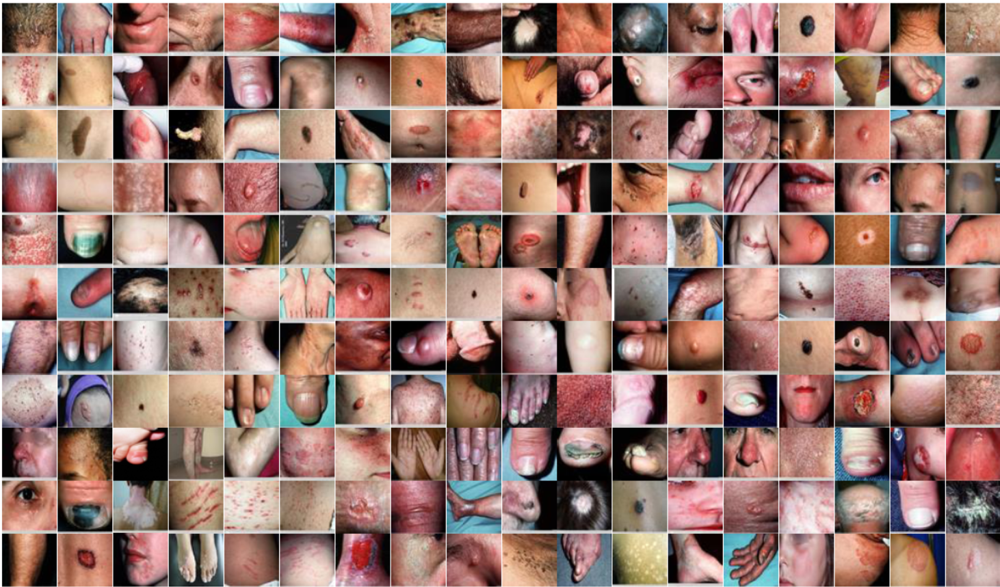

Ming Sun
(孙明)
BaiDu IDL
Email: m_sunming@163.com
Short Bio
I am working at BAIDU IDL with Feng Zhou.
Fortunately, I was supervised by prefessor JuFeng Yang and MingMing Cheng.
And received the Master degree from Nankai University in 2017.
My interests include fine-grained , video classification and human pose estimation, especially metric learning, attention model.

|
Visual Sentiment Prediction based on Automatic Discovery of Affective Regions
Jufeng Yang, Dongyu She, Ming Sun, Ming-Ming Cheng, Paul L. Rosin, Liang Wang
IEEE Transactions on Multimedia (TMM), 2018
|

|
Joint Image Emotion Classification and Distribution Learning via Deep Convolutional Neural Network
Jufeng Yang, Dongyu She, Ming Sun
International Joint Conference on Artificial Intelligence (IJCAI), 2017
|

|
Learning Visual Sentiment Distributions via Augmented Conditional Probability Neural Network
Jufeng Yang, Ming Sun, Xiaoxiao Sun
AAAI Conference on Artificial Intelligence (AAAI), 2017
[Project page]
|
|

|
A Benchmark for Automatic Visual Classification of Clinical Skin Disease Images
Xiaoxiao Sun, Jufeng Yang, Ming Sun, Kai Wang
European Conference on Computer Vision (ECCV), 2016
[Project page]
|

|
Shape-Guided Segmentation for Fine-Grained Visual Categorization
Ming Sun, Jufeng Yang, Bo Sun, Kai Wang
IEEE International Conference on Multimedia and Expo (ICME), oral presentation, 2016
|

|
Discovering Affective Regions in Deep Convolutional Neural Networks for Visual Sentiment Prediction
Ming Sun, Jufeng Yang, Kai Wang, Hui Shen
IEEE International Conference on Multimedia and Expo (ICME), 2016
|